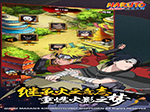

⇓游戏资讯 ⇓
-
故事梗概
十多年前一只恐怖的尾兽“九尾妖狐”袭击了木叶隐村，当时的第四代火影拼尽全力，以自己的生命为代价将“九尾妖狐”封印在了刚出生的鸣人身上。木叶村终于恢复了平静，但村民们却把鸣人当成怪物看待，所有人都疏远他。无可奈何，鸣人用各种恶作剧试图吸引大家的注意力。在伊鲁卡老师的关心下，鸣人始终保持着乐观的精神。为了让更多的人认可自己，他下定决心要成为火影！鸣人怀着过人的自信与勇气开始了训练，但一切要比他想象的要困难的多！
鸣人从小十分孤独，木叶村村民把他当成九尾的化身，当他是怪物看待。一晃十多年过去了， 鸣人考入了木叶村的忍者学校，结识了伙伴佐助和小樱。佐助是宇智波一族的末裔，当他还是小孩的时候他的哥哥——一个拥有强大实力的忍者将他们家族的人都杀死了，然后投靠了一直想将木叶村毁灭的大蛇丸，佐助从小就发誓要杀死哥哥，为家族报仇。鸣人他们在忍者学校得到了卡卡西老师的精心指点，在他的帮助下去迎接成长中的一次又一次挑战！
不久之后，在卡卡西老师的带领下，鸣人与佐助、小樱一起踏上了修行之路。等待他们的将是无穷无尽的艰险挑战，而鸣人等人也在这生与死的较量中逐渐成长起来。
-
游戏特色

《火影忍者》官方正版授权手游——《火影忍者-忍者大师》强势来袭！ 漫画的连载已完结，羁绊仍持续！火の意志，由你继承！游戏完美再现原著剧情，原汁原味引爆动漫经典；动画原著人物悉数登场，带你回到最初的感动；
禁术仙术究极忍术，由你操控；影级神级巅峰级忍者由你自由组合，打造最强阵容；血统感情种种羁绊助阵，探索忍界奥秘；
原著品质画面，极致还原火影忍者世界，忍者大师之路等你加入！
-
游戏羁绊

漩涡鸣人 主动技能：鸣人连弹 羁绊1：上忍之力-装备上忍手里剑，攻击提高12% 羁绊2：上忍之御-装备上忍皮甲，防御提高12% 羁绊3：上忍之护-装备上忍斗笠，生命提高12% 羁绊4：上忍之命-装备上忍护身符，生命提高12%
千手扉间 主动技能：飞雷神斩 羁绊1：四赤阳阵-与千手柱间、猿飞日斩、波风水门一起上阵，生命提高24%，攻击提高24% 羁绊2：放下仇恨-与宇智波斑一起上阵，生命提高20% 羁绊3：秽土禁术-与大蛇丸一起上阵，生命提高15% 羁绊4：最后教导-与志村团藏一起上阵，攻击提高15%
猿飞日斩 主动技能：土遁·土流大河 羁绊1：四赤阳阵-与千手柱间、千手扉间、波风水门一起上阵，生命提高24%，攻击提高24% 羁绊2：父子情深-与猿飞阿斯玛一起上阵，生命提高16% 羁绊3：火影与根-与志村团藏一起上阵，攻击提高15% 羁绊4：得到赏识-与旗木卡卡西一起上阵，生命提高15%
-
忍者大师

好玩